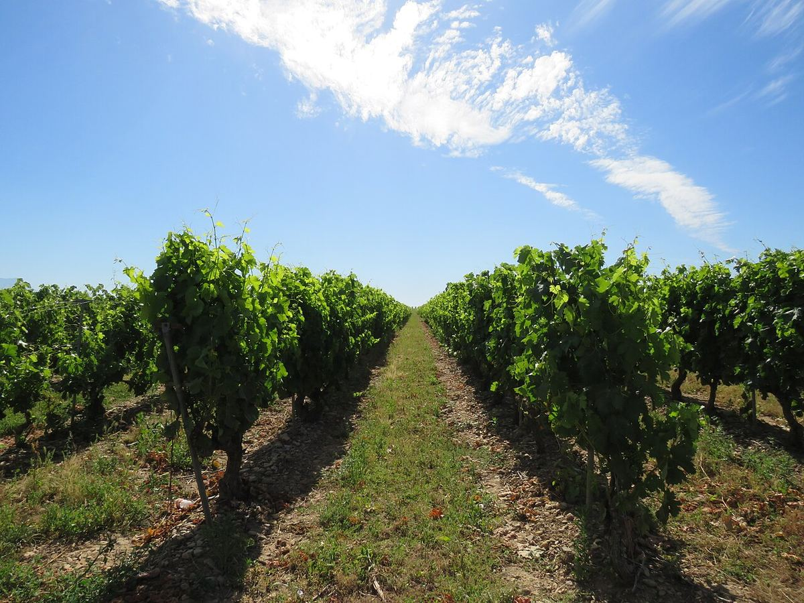

Rioja
Bodegas centenarias junto a la estación de Haro, villas medievales, arquitectura de autor y los monasterios donde nació el castellano escrito.

La Rioja es la región vinícola más visitada de España. Sus viñedos siguen el curso del Ebro entre La Rioja, Álava y Navarra, protegidos al norte por la sierra de Cantabria. Tempranillo, garnacha, graciano y mazuelo dan tintos de crianza que hicieron famosa la zona desde el siglo XIX, cuando la llegada del ferrocarril y la demanda francesa tras la filoxera impulsaron las grandes bodegas.
Haro y el Barrio de la Estación
Junto a la estación de Haro se agrupan varias bodegas históricas, como López de Heredia, La Rioja Alta, CVNE, Muga o Bodegas Bilbaínas: pocas veces se encuentran tantas casas centenarias a pocos pasos unas de otras. Cada 29 de junio, la Batalla del Vino tiñe de morado a los vecinos en los Riscos de Bilibio.
Rioja Alavesa
Laguardia, villa amurallada sobre un cerro, esconde bajo sus calles antiguos calados excavados para guardar vino. Muy cerca están algunos de los edificios de bodega más fotografiados del mundo, como el de Marqués de Riscal en Elciego, diseñado por Frank Gehry, o el de Ysios, de Santiago Calatrava.
Cultura del vino
En Briones, el Museo Vivanco de la Cultura del Vino repasa la historia del vino con piezas arqueológicas y obras de arte. Los monasterios de Suso y Yuso, en San Millán de la Cogolla, Patrimonio Mundial, guardan las Glosas Emilianenses. Y en Logroño, la calle Laurel es parada obligada para tapear con un vino de la tierra.
Pueblos y ciudades
Haro, Laguardia, Elciego, Briones, San Vicente de la Sonsierra, Logroño, San Millán de la Cogolla, Ezcaray.
Qué ver
- Barrio de la Estación de Haro.
- Laguardia y sus calados.
- Museo Vivanco (Briones).
- Monasterios de Suso y Yuso.
- Calle Laurel de Logroño.
Cuándo ir
Septiembre y octubre (vendimia y fiestas de San Mateo en Logroño); finales de junio para la Batalla del Vino.
Gastronomía
Patatas a la riojana, chuletillas de cordero asadas con sarmientos, pimientos y verduras de la huerta.
Consejo
En Haro puedes visitar varias bodegas a pie en un mismo día sin mover el coche.
Bodegas de la zona en la enciclopedia
Las marcadas con «visitas» ofrecen, según nuestra información, visitas o actividades de enoturismo.
Información orientativa. Horarios, precios y reservas cambian: confírmalos con cada bodega o con la oficina de turismo antes de ir. Si bebes, no conduzcas, y hazlo con moderación.